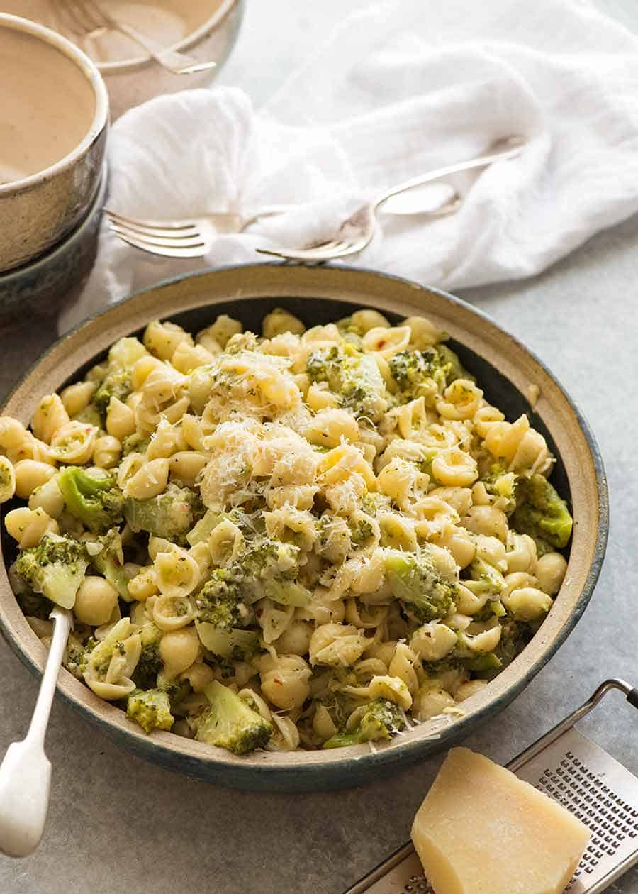

Broccoli Pasta

Ingredients
- 350g / 12 oz dried short pasta
- 1 tsp olive oil
- 2 tsp lemon zest
- 2 garlic cloves
- Salt and pepper
- 1 tsp mixed dried herbs
Preparations
- Chop broccoli into small florets.
- Place Sauce ingredients in a jar with lid.
- Stir vigorously, adding more pasta water if required. Add more salt and pepper if required. Serve immediately, garnished with parmesan.